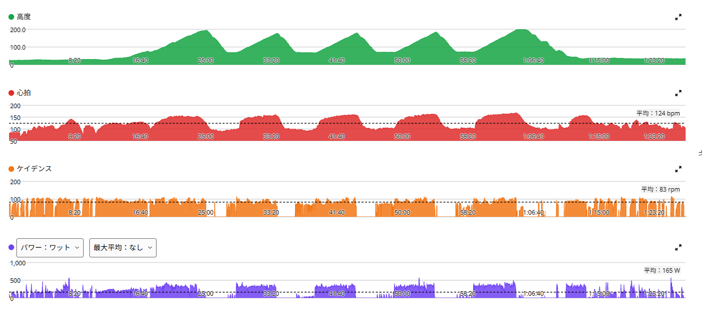

唐沢ゴルビー。前より余裕はあった。でも最後の1本は普通に地獄だった
今日は唐沢山でゴルビー。5分前後の高強度を5本、レストも約5分。前日に考えていた目安は、最初から飛ばしすぎず、320〜325W前後を中心にそろえて、後半に余裕があれば上げること。結果として、きれいな形で5本まとめることができた。
ただし、最後の5本目だけは別。全体としては以前のゴルビーより少し余裕を感じたが、5本目はしっかり、とてもつらかった。

30.07km・NP256W・TSS123.1
- 全体30.07km / 1時間26分00秒 / 獲得663m / 平均気温24.1℃
- 負荷平均165W / NP256W / IF0.929 / TSS123.1
- 心拍・回転平均124bpm / 最大169bpm / 平均83rpm
- 効果有酸素TE3.7 / 運動負荷159
パワーはゾーン5以上に約27分（Z5 10分36秒・Z6 15分22秒・Z7 1分02秒）。今日は完全にON日である。

1〜3本目は、少し控えめに入って320W台にそろえた
- 1本目5分06秒 / 316W / 心拍平均148bpm・最大156bpm / 90rpm
- 2本目5分01秒 / 325W / 心拍平均146bpm・最大160bpm / 86rpm
- 3本目5分01秒 / 324W / 心拍平均148bpm・最大161bpm / 87rpm
1本目は、最初から突っ込みすぎないように入った。316Wは十分高いが、今日の中では一番低い出力で、目安より少し控えめである。以前ローラーで315W前後×5本をやったときは、ギリギリの感覚があった。今日は実走の唐沢山ということもあり、1本目の時点ではまだコントロールできていた。
2本目で、今回の基準に考えていた325Wへ。3本目もほぼ同じ324W。ここまで大きく崩れず、安定していた。今日感じた「前のゴルビーよりは少し余裕がある」という感覚は、このあたりまでの話である。楽だったわけではない。でも、以前よりも5分の高強度を受け止められる感じがあった。
4本目は334W。前半を抑えた分が残っていた
- 4本目5分01秒 / 334W / 心拍平均150bpm・最大163bpm / 91rpm
4本目でさらに上げた。5分を3本やったあとでも、出力を落とすどころか上げられている。この時点では、良い流れだった。
5本目は頂上まで351W。ここで余裕は消えた
- 5本目5分23秒6 / 351W / 心拍平均154bpm・最大169bpm / 90rpm
5本目は、いつもの5分地点で止めず、そのまま唐沢山の頂上まで登った。せっかくなのでラストは出し切らないと勿体ない。死に物狂いである。時間が他の4本より長いのはそのためで、タイムだけを横並びで比べることはできない。
この5本目は本当にきつかった。前の4本を終えた状態から、そのまま頂上まで351W。最後はしっかり追い込んだ。「今日は余裕があった」だけでまとめると、この5本目のつらさが抜けてしまう。正確には、前半〜4本目までは以前よりコントロールできた、最後の5本目はかなりつらかった、である。
過去のゴルビーと並べてみる
- 7月7日331 / 339 / 337 / 330 / 340W（平均約335W）
- 7月18日338 / 354 / 352 / 331 / 336W（平均約342W）
- 7月28日348 / 339 / 333 / 323 / 317W（後半に垂れた）
- 8月8日323 / 328 / 328 / 321 / 332W（平均約326W）
- 今日316 / 325 / 324 / 334 / 351W（平均約330W）
正直に書くと、平均の出力だけなら7月の方が高い回もある。といか7月が今振り返ると高くて驚き。7月18日は平均約342Wだった。今日が違うのは、並び方である。7月28日は最初に突っ込んで後半に垂れた。今日は前半を抑えて、後半へ向けて上げて、最後に一番高い出力を持ってきた。最後の1本の351Wは、これまでのゴルビーの5本目としては一番高い（ただし今日は頂上までで少し長い）。ゴルビーとしては、かなり良い組み立てになったと思う。
ちなみに前日の太平山反時計回り、最後の唐沢山は5分24秒・354Wだった。今日の5本目は5分24秒・351Wで、数字はほぼ同じ。ただし昨日は太平山や琴平峠を走ったあと、今日は5分の高強度を4本やったあとで、疲労の種類が違うので単純には比べない。それでも、唐沢山の「最後に約5分全力で登る」というテーマには、今日の5本目はかなり合っている。
「楽になった」ではなく「コントロールできた」
今日はきつかった。ただ、以前のゴルビーよりは、全体として少し余裕を感じた。1本目から3本目までは以前よりも落ち着いて走れた感覚があり、4本目も334Wまで上げられた。でも、5本目は本当にきつかった。
だから、「前より楽になった」というより、「同じ高強度を少しコントロールできるようになった」くらいが今の感覚に近い。そして最後に、ちゃんとつらいところまで行けた。前より少しコントロールできた。でも最後は、ちゃんと地獄だった。それでいいと思う。
次に見るポイント
- 前半1〜3本目を320W台で安定してそろえる。次回は320W台後半を5本
- 後半4本目以降でも出力を落とさない
- 5本目毎回351Wを狙うのではなく、その日の最後にしっかり出し切る
- 唐沢山約5分全力を習慣にする。太平山反時計回りの最後の唐沢との違いも見る
- きつさ前回のゴルビーより主観的なきつさがどう変わるか